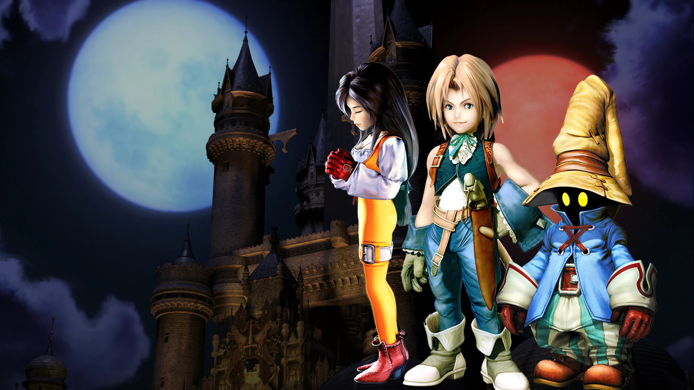
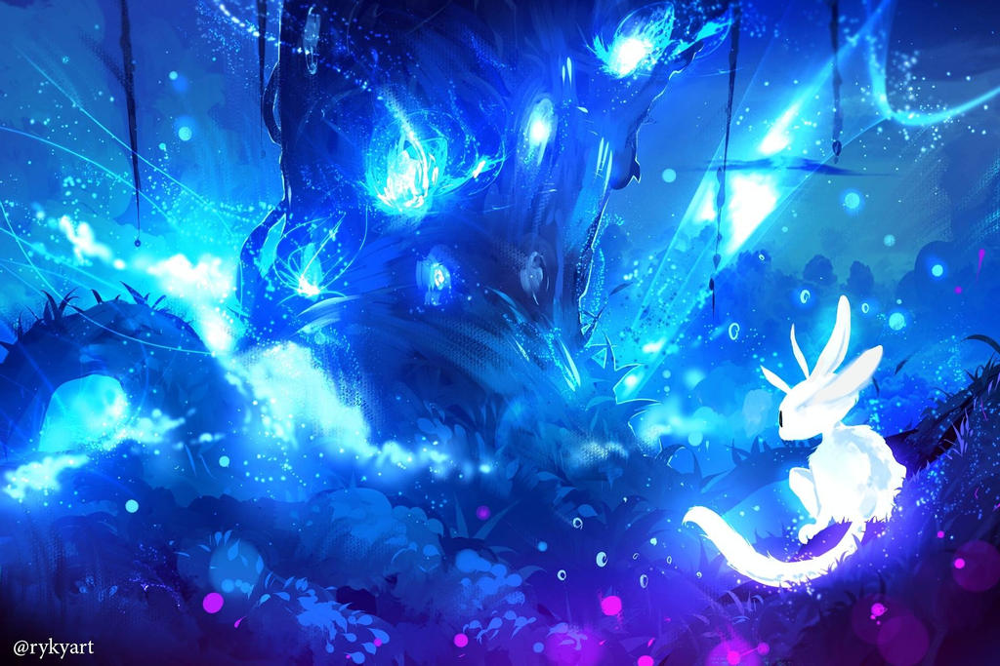
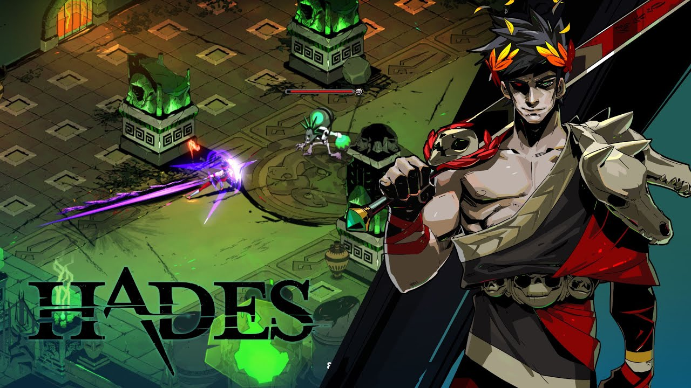

Final Fantasy IX

Coming in at the top, FFIX is my favorite video game of all time. Whether it's due to nostalgia or being one of the first games I finished as a kid, it holds a special place in my heart. Memorable art style, a sountrack to enhance pivotal moments, a cast of characters that grow & develop, as well as being the creator's favorite game created are just some reasons I believe it is the best of the Final Fantasy series.

Ori and the Blind Forest

Next on our list is my number two favoirte game, Ori and the Blind Forest. This game is absoutely beautiful. Described as metroidvanian, it follows in the footsteps of famous games like Metroid & Mega Man but has hollowed out its own place among them. You follow the hero, Ori, as he tries to save the dying forest of Nibel.

Hades

Last but not least, my third favorted game is Hades. Being a huge fan of everything greek mythology there was not doubt that I was going to love the game. Unlike FFIX, a role playing game & Ori, a metroidvanian, Hades is a roguelike, action role-play. You follow Zagreus, the prince of the Underworld as tries to escape the relm and his father, Hades, to reach Mount Olympus.